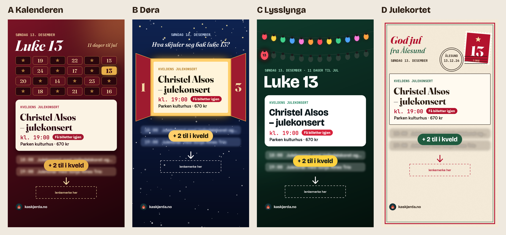
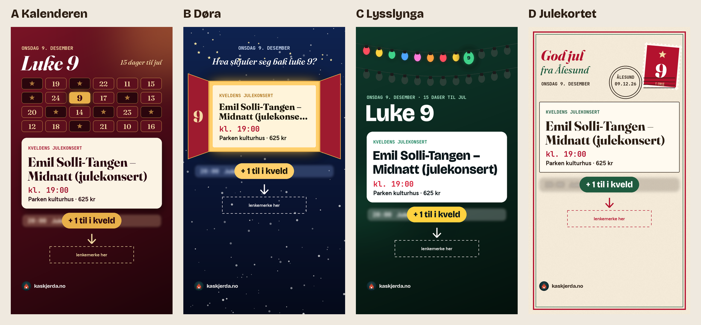
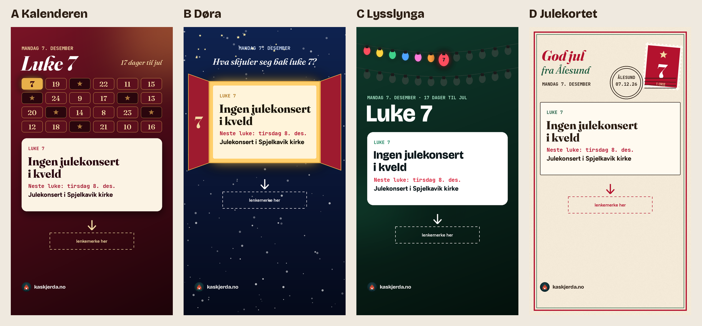

«Luke X»: julekonsert-historien
Forslag fra 24. nov. 2026: julevarianten av «I kveld»-historien, 1.–24. desember (1080 × 1920). Dagens luke er kveldens julekonsert (helst en med «få billetter igjen»); resten av kveldens julearrangementer er uskarpe, og pila peker til lenkemerket kaskjerda.no/julekonserter-i-alesund/?ref=ig-luke. Utsolgte er aldri med. Laget av forslag.py med ekte data. Ingenting valgt ennå.
A Kalenderen (alle 24 luker, åpnede blir stjerner), B Døra (luka står åpen og lyser), C Lysslynga (én pære tennes hver dag), D Julekortet (frimerke og poststempel).
Luke 13: søndag 13. desember

Luke 9: onsdag 9. desember

Luke 7: kveld uten julekonsert
Luka viser neste julekonsert. Alternativt: ingen historie den dagen.
